Textadept 11.4 nightly Manual
Contents
- Introduction
- Getting Started
- User Interface
- Working with Files and Projects
- Adept Editing
- Compile, Run, Build, and Test
- Modules
- Themes
- Scripting
- Compiling
- Appendix
Introduction
Overview
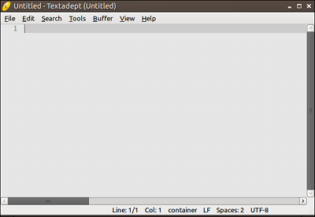
Textadept is a fast, minimalist, and remarkably extensible cross-platform text editor for programmers. Written in a combination of C and Lua and relentlessly optimized for speed and minimalism over the last 12+ years, Textadept is an ideal editor for programmers who want endless extensibility without sacrificing speed and disk space, and without succumbing to code bloat and a superabundance of features. The application has both a graphical user interface (GUI) version that runs in a desktop environment, and a terminal version that runs within a terminal emulator.
Textadept is fast. It starts up instantly and has a very responsive user interface. C code is about as fast as you can get, and Lua is widely regarded as being one of the fastest scripting languages available.
Textadept is minimalist. Not only is this evident in the editor’s appearance, but its C core is limited to around 2000 lines of code and its Lua extension code tries to avoid going beyond 4000 lines. After more than 12 years of development, Textadept contains roughly the same amount of code since its inception while significantly improving year after year.
Textadept is remarkably extensible. It was designed to be that way from the beginning; the editor’s features came later. Most of Textadept’s internals are written in Lua: syntax highlighting, opening and saving files, and search and replace, to name a few. Textadept gives you nearly complete control over the entire application using Lua. Capabilities like navigating within the editor, changing menus and key bindings on the fly, handling core events, and highlighting the syntax of new programming languages are possible. The editor’s potential is seemingly limitless.
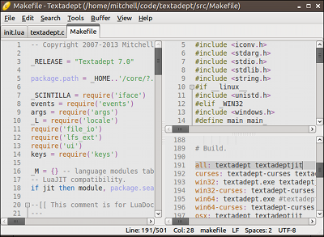
About This Manual
This manual uses the following typographical conventions:
- Italic: Used for filenames.
Constant width: Used for environment variables, command line arguments, shell code, key bindings, and Lua code, including functions, tables, and variables.
Key bindings use the following modifier key representations:
| Modifier | Windows, Linux, BSD | macOS | Terminal |
|---|---|---|---|
| Control | Ctrl |
^ |
^ |
| Alt | Alt |
⌥ |
M- |
| Command | N/A | ⌘ |
N/A |
| Shift | Shift |
⇧ |
S- |
This manual uses the following terminology:
- buffer: An object that contains editable text. Some other applications call this object a document or file.
- view: An object that displays a single buffer. Some other applications call this object a window.
- caret: The visual that represents the text insertion point. It is usually a blinking line.
- module: A package of Lua code that provides functionality for Textadept.
- lexer: A Lua module that highlights the syntax of source code written in a particular programming language. Textadept refers to a programming language by its lexer’s name.
Finally, this manual assumes you are familiar enough with the Lua programming language that you can understand the simple code samples spread throughout the manual’s contents. If you would like to quickly get up to speed, or need a refresher, the excerpt from Lua Quick Reference may be of help.
~/.textadept
Textadept stores all settings and user data in a local user directory that varies, depending on the platform. This directory can also be configured using command line arguments. On Windows systems, the default user directory is C:\Users\username\.textadept\ or C:\Documents and Settings\username\.textadept\; on macOS, the default user directory is /Users/username/.textadept/; and on Linux and BSD, it is /home/username/.textadept/. (Substitute username for your actual user name.) From this point forward, the manual will use ~/.textadept/ in place of any platform-specific user data directory.
There is a special file, ~/.textadept/init.lua, that Textadept will create for you if it does
not already exist. This file is what you use to configure Textadept, specify your preferences,
and customize what the application does when it starts. For example, you can use this file to set
a color theme, specify default buffer and view settings, change the settings of existing modules,
load custom modules, configure key bindings, extend menus, enhance support for file types and
programming languages, and run arbitrary Lua code. These topics will be covered throughout
the manual. Textadept’s comprehensive Lua API lists, among other things, all configurable
settings for buffers, views, and modules. You can open your ~/.textadept/init.lua file via
Ctrl+P on Windows, Linux, and BSD, ⌘, on macOS, and M-~ in the terminal version.
Here is a simple ~/.textadept/init.lua for illustration:
-- Adjust the default theme's font and size.
if not CURSES then
view:set_theme('light', {font = 'DejaVu Sans Mono', size = 12})
end
-- Always use tabs for indentation.
buffer.use_tabs = true
buffer.tab_width = 4
-- Always strip trailing spaces on save, automatically highlight the current
-- word, and use C99-style line comments in C code.
textadept.editing.strip_trailing_spaces = true
textadept.editing.highlight_words = textadept.editing.HIGHLIGHT_CURRENT
textadept.editing.comment_string.ansi_c = '//'
-- Load an external module and bind a key to it.
local ctags = require('ctags')
keys.f12 = ctags.goto_tag
-- Recognize .luadoc files as Lua code.
textadept.file_types.extensions.luadoc = 'lua'
-- Change the run commands for Lua and Python
textadept.run.run_commands.lua = 'lua5.1 "%f"'
textadept.run.run_commands.python = 'python3 "%f"'
-- Always use PEP-8 indentation style for Python files.
events.connect(events.LEXER_LOADED, function(name)
if name ~= 'python' then return end
buffer.use_tabs = false
buffer.tab_width = 4
end)
Note: ~/.textadept/init.lua must not call any functions that create buffers and views
(e.g. ui.print(), io.open_file(), and buffer.new()) at file-level scope. Buffers and
views can only be created within functions assigned to keys, associated with menu items, or
connected to events.
Getting Started
Requirements
In its bid for minimalism, Textadept depends on very little to run. On Windows and macOS, it has no external dependencies. On Linux and BSD, the GUI version depends only on GTK (a cross-platform GUI toolkit), and the terminal version depends only on a wide-character implementation of curses like ncurses(w). Most Linux and BSD systems either already have these dependencies installed, or they are readily available from a package manager.
Windows 7 (64-bit) and Mac OSX 10.10 (Yosemite) are the minimum required operating systems. Linux and BSD have no defined minimum.
Download
Textadept releases can be found here. Select the appropriate package for your platform. A comprehensive list of changes between releases can be found here. You can also download a separate set of modules that provide extra features and functionality to the core application.
Windows Note: antivirus software may flag the Windows package as containing a virus or malware. This is a false-positive, likely due to Textadept’s terminal version executable, which is a console application.
The following table lists Textadept’s approximate download and installation size for each platform.
| Platform | Download Size | Installed Size |
|---|---|---|
| Linux | 4 MB | 8 MB |
| Windows | 21 MB | 57 MB (11 MB without bundled GTK Runtime) |
| macOS | 20 MB | 65 MB (9 MB without bundled GTK Runtime) |
Note: each platform package contains two executables, one for the GUI version of Textadept, and one for the terminal version.
Installation
Installing Textadept is simple and easy. You do not need administrator privileges. On Windows,
Linux, and BSD, simply unpack the archive anywhere. On macOS, unpack the archive and move
Textadept.app to your user or system Applications/ directory like any other macOS
application. The macOS archive also contains a ta script for launching Textadept from the
command line. You can put this script somewhere in your $PATH (e.g. /usr/local/bin/),
but this is completely optional.
If you downloaded Textadept’s extra set of modules, you can unpack its contents into Textadept’s directory (thus merging the modules/ directories) on Windows, Linux, and BSD. On macOS, it is recommended to create a ~/.textadept/ directory (if it does not already exist) and unpack the modules there (thus creating or merging the modules/ directory).
Note: Textadept generally does not auto-load modules, so you will need to load at least some of those extra modules manually. For example, in your ~/.textadept/init.lua:
require('ctags')
require('file_diff')
require('spellcheck')
Updating
Textadept releases typically occur on the first day of the month every 1-2 months. There is no auto-update process. (Textadept does not connect to the internet; it’s just a text editor.) Simply download the new version and copy its contents into your current installation, overwriting any existing files and directories.
Running
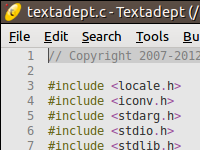 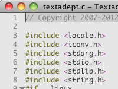 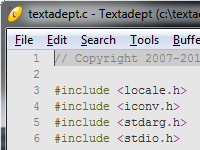 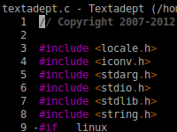
Run Textadept on Windows by double-clicking textadept.exe or textadept-curses.exe. On macOS, double-click Textadept.app or invoke the ta script from the command line. On Linux and BSD, invoke textadept or textadept-curses from a file browser, run dialog, terminal, etc.
For convenience, you can create shortcuts to the executables on the Windows Desktop, Start Menu,
Quick Launch toolbar, etc. On macOS, you can pin the app to your dock. On Linux and BSD, you can
create a symbolic link to the executables from somewhere in your $PATH (e.g. /usr/local/bin/)
or make a GNOME, KDE, XFCE, etc. button or menu launcher. Textadept’s src/textadept.desktop
and src/textadept-curses.desktop files may be of help.
Textadept accepts a variety of command line arguments, which are listed in the table below.
| Option | Arguments | Description |
|---|---|---|
-e, --execute |
1 | Run the given Lua code |
-f, --force |
0 | Forces unique instance |
-h, --help |
0 | Shows thisa |
-l, --line |
1 | Jumps to a line in the previously opened file |
-n, --nosession |
0 | No state saving/restoring functionality |
-p, --preserve |
0 | Preserve ^Q and ^S flow control sequencesb |
-s, --session |
1 | Loads the given session on startup |
-u, --userhome |
1 | Sets alternate user data directory |
-v, --version |
0 | Prints version and copyright infoa |
aThe terminal version does not support these.
bNon-Windows terminal version only.
You can add your own command line arguments using args.register(). For example, in your
~/.textadept/init.lua:
args.register('-r', '--read-only', 0, function()
events.connect(events.FILE_OPENED, function()
buffer.read_only = true -- make all opened buffers read-only
end)
textadept.menu.menubar = nil -- hide the menubar
end, "Read-only mode")
Textadept can also open files and projects using the command line. For example:
textadept /path/to/file1 ../relative/path/to/file2
textadept /path/to/project/ relative/path/to/file1 relative/file2
Unless a filename is specified as an absolute path, Textadept assumes it is relative to the application’s current working directory (cwd). Textadept’s cwd is initially the command line’s cwd. (If Textadept is not being run from the command line, its cwd is unspecified.) If a project directory is specified, it becomes Textadept’s cwd. (Textadept does not open all files in that directory.) If multiple project directories are specified, the last one becomes the cwd.
By default, Textadept saves its state when it exits. (This state consists of buffers and split views that are open, the list of recently opened files, the application window’s size and maximized state, etc.) If Textadept is not given any files or projects to open, it will try to restore its state at last exit.
Tip: you can explicitly tell Textadept to load a session by name using the -s or --session
command line argument. You can disable session functionality using -n or --nosession. Session
files are stored in ~/.textadept/, and the default session name is “session”.
The GUI version of Textadept is a single-instance application. This means that after you start
Textadept, any time you invoke it again (e.g. opening a file from a file browser or command
line), the action happens in the original instance. If you want to run separate instances of
Textadept, pass the -f or --force command line flag. On Windows, you can create a shortcut
to textadept.exe that passes this flag and use that shortcut to run Textadept. On Linux and
BSD, you can set up your button or menu launchers to pass the flag to the textadept executable.
Textadept can be run as a portable application. This is useful if, for example, you want to
install Textadept onto a flash drive and take it with you for use on multiple machines. Normally,
all settings and user data is stored in ~/.textadept/ (a local user directory that varies,
depending on the platform). However, this user directory can be controlled using the -u or
--userhome command line argument. For example, invoking textadept.exe with the command line
arguments -u userdata will read from and store settings and user data to a userdata/ directory
located inside an installation of Textadept. You can create a Windows shortcut that passes these
command line arguments to the Textadept executable and use that shortcut to run Textadept portably.
Textadept’s user interface has been translated into a few different languages. When the
application starts, it attempts to auto-detect your language settings by reading from the $LANG
environment variable. If Textadept cannot determine what language to use, or if it does not
support your language, it falls back on English. You can manually set your locale by copying
one of the locale configuration files from Textadept’s core/locales/ to your ~/.textadept/
directory and renaming it locale.conf. If you would like to translate Textadept into your
language, please translate the English messages in core/locale.conf and send me (see README.md)
the modified file for inclusion in a future release.
macOS Tip: by default, macOS does not allow GUI applications like Textadept.app to see
shell environment variables like $PATH. (The terminal version is unaffected.) Consequently,
any features that utilize programs contained in $PATH (e.g. the programs in /usr/bin/
or /usr/local/bin/) will not find those programs. In order to work around this, Textadept
automatically invokes a user-created ~/.textadept/osx_env.sh file when the application
starts. This script should export all of the environment variables you need Textadept to
see. For example:
export PATH=$PATH
Linux Note: providing a single binary that runs on all Linux systems proves challenging, since the versions of software installed vary widely from distribution to distribution. If you get errors like:
error while loading shared libraries: <lib>: cannot open shared object file: No such file or directory/<path>/libc.so.6: version 'GLIBC_<version>' not found
you will need to compile Textadept manually for your system, which is a very straightforward and easy process.
User Interface
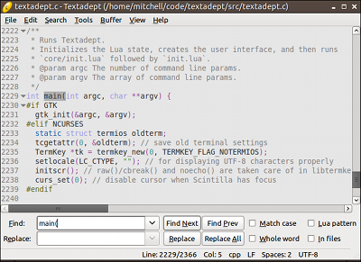
Textadept’s user interface is sleek and simple. It consists of a menu bar, tab bar, editor view, and statusbar. There is also a find & replace pane and a command entry, though Textadept initially hides them both.
Textadept’s titlebar shows the name and path of the current, active buffer. A ‘*’ character, if present, indicates there are unsaved changes in that buffer.
Menu
The GUI version of Textadept has a completely customizable menu that provides access to nearly all of the application’s editing features.
Tip: Textadept is largely a keyboard-driven application, so nearly every menu item has a key
binding. For at least the GUI version in the English locale on Windows, Linux, and BSD, each
menu and menu item also has a unique mnemonic that can be used to activate it. For example,
Alt+E accesses the “Edit” menu, S opens the “Select” sub-menu, and L invokes the menu
item that selects the current line.
Textadept’s menu is also accessible in the form of a searchable dialog via Ctrl+Shift+E on
Windows, Linux, and BSD, ⌘⇧E on macOS, and M-S-C in the terminal version. (Despite the
fact that the terminal version does not have a menu, it does have this dialog.) Typing part of
the name of any command in the dialog filters the list, with spaces being wildcards. The arrow
keys move the selection up and down. Pressing Enter, selecting OK, or double-clicking on a
command invokes it. (The terminal requires pressing Enter.) This feature is an alternative
to navigating the menus or remembering key bindings. It can also be used to quickly look up
key bindings for particular commands.
Note: for commands that have more than one key binding, only one of those bindings is shown in the menu and dialog, and that binding is randomly chosen.
You can extend Textadept’s menu with your own menus, sub-menus, and menu items by modifying
the textadept.menu.menubar table. Any modifications will show up in the selection dialog
mentioned previously, even in the terminal version. For example, in your ~/.textadept/init.lua:
local tools = textadept.menu.menubar[_L['Tools']]
tools[#tools + 1] = {''} -- separator
tools[#tools + 1] = {'Reset L_ua State', reset}
Tab Bar
The GUI version of Textadept has a tab bar that displays all of Textadept’s open buffers by name,
though it is only visible when two or more buffers are open. A ‘*’ character, if present,
indicates there are unsaved changes in the marked buffer. There is only one tab bar for the
entire application, even if there are multiple split views. When two or more views are open, the
state of the tab bar applies only to the active view, and using the tab bar to switch between
files also applies only to that view. Right-clicking on the tab bar brings up a configurable
context menu that is defined by textadept.menu.tab_context_menu. Tabs can be rearranged
by clicking on their tops and dragging and dropping them. You can turn off the tab bar by setting
ui.tabs. For example, in your ~/.textadept/init.lua:
ui.tabs = false
Cycle to the next buffer via Ctrl+Tab on Windows, Linux, and BSD, ^⇥ on macOS, and M-N
in the terminal version. Cycle to the previous buffer via Ctrl+Shift+Tab, ^⇧⇥, and M-P.
Note: Textadept does not currently support rearranging tabs (e.g. via drag and drop).
The tab bar is also accessible in the form of a searchable dialog via Ctrl+B on Windows,
Linux, and BSD, ⌘B on macOS, and M-B or M-S-B in the terminal version. (Despite the
fact that the terminal version does not have a tab bar, it does have this dialog.) The dialog
displays a list of currently open buffers. Typing part of any filename filters the list,
with spaces being wildcards. The arrow keys move the selection up and down. Pressing Enter,
selecting OK, or double-clicking on a buffer switches to it. (The terminal requires pressing
Enter.) This feature is particularly useful when many files are open, and navigating through
the tab bar is tedious.
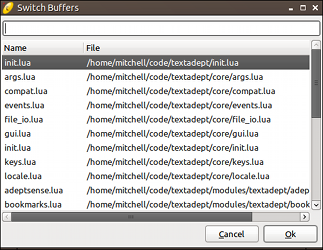 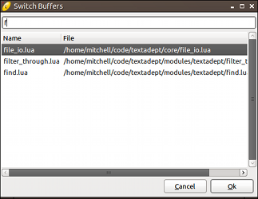
By default, the list shows buffers in the same order as the tab bar (the most recently opened buffers are shown towards the bottom). You can configure the list to show the most recently viewed buffers first by changing the key binding. For example, in your ~/.textadept/init.lua:
keys['ctrl+b'] = function() ui.switch_buffer(true) end
Editor View
The editor view is where you will spend most of your time in Textadept. You can split it vertically
and horizontally as many times as you like, and you can view the same buffer in two or more
separate views. Lua also has near complete control over all views. The buffer and view
documentation lists everything you can do with buffers and views directly. Right-clicking inside
a view brings up a configurable context menu that is defined by textadept.menu.context_menu.
Split views can be dynamically resized by clicking and dragging on the splitter bar that separates them. The following key bindings apply for split views:
- Split a view horizontally into top and bottom views via
Ctrl+Alt+SorCtrl+Alt+Hon Windows, Linux, and BSD,^Son macOS, andM-^V Sin the terminal version. - Split a view vertically into side-by-side views via
Ctrl+Alt+Von Windows, Linux, and BSD,^Von macOS, andM-^V Vin the terminal version. - Cycle to the next split view via
Ctrl+Alt+Non Windows, Linux, and BSD,^⌥⇥on macOS, andM-^V Nin the terminal version. - Cycle to the previous split view via
Ctrl+Alt+Pon Windows, Linux, and BSD,^⌥⇧⇥on macOS, andM-^V Pin the terminal version. - Grow or shrink a view via
Ctrl+Alt++orCtrl+Alt+-, respectively, on Windows, Linux, and BSD;^+or^-, respectively, on macOS; andM-^V +orM-^V -in the terminal version. - Unsplit the current view by removing its complement view(s) via
Ctrl+Alt+Won Windows, Linux, and BSD,^Won macOS, andM-^V Win the terminal version. - Unsplit the current view by removing all other views via
Ctrl+Alt+Shift+Won Windows, Linux, and BSD,^⇧Won macOS, andM-^V S-Win the terminal version.
Note: depending on the split sequence, the order when cycling between views may not be linear.
Terminal version note: M-^V is the key chain prefix for split views. Press and release
the prefix, and then type the next key in the chain by itself in order to perform the split
view action.
Find & Replace Pane
The find & replace pane is a compact, full-featured pane that allows you to quickly search through files and directories. The pane is available only when you need it and quickly gets out of your way when you do not, minimizing distractions.
You can summon the find & replace pane via Ctrl+F on Windows, Linux and BSD, ⌘F on macOS,
and M-F or M-S-F in the terminal version. It has the usual find and replace functionality you
would expect, along with “Match Case”, “Whole Word”, “Regex”, and
“In Files” options. The pane also stores find and replace history, up to 10 entries for each. As
you search, Textadept can automatically highlight all instances of found text in the current buffer
by setting ui.find.highlight_all_matches. For example, in your ~/.textadept/init.lua:
ui.find.highlight_all_matches = true
Note: Textadept does not support multi-line regex searches.
While the pane is open in the GUI, the following key bindings apply:
- Perform “Find Next” and “Find Prev” in the “Find” entry via
EnterandShift+Enter, respectively. Perform “Replace” and “Replace All” in the “Replace” entry via
EnterandShift+Enter, respectively. When the “Regex” find option is enabled,\nin the “Replace” entry represents the nth captured matching region’s text, and\0represents all matched text.\Uand\Lconverts everything up to the next\L,\U, or\Eto uppercase and lowercase, respectively. (\Eturns off conversion.)\uand\lconverts the next character to uppercase and lowercase, respectively. These may appear within\Uand\Lconstructs.
For at least the English locale, toggle the find options using their button mnemonics:
Alt+M,Alt+W,Alt+X,Alt+Ion Windows, Linux, and BSD, and⌘M,⌘W,⌘X, and⌘I, respectively, on macOS.- Cycle through find/replace history via
UpandDownon Windows, Linux, BSD, and the terminal version, and⇡and⇣on macOS. - Hide the pane via
Esc.
While the pane is open in the terminal version, the following key bindings apply:
- Switch between “Find” and “Replace” entries via
DownandUp. - Toggle between “Find Next” and “Find Prev” in the “Find” entry via
Tab. - Toggle between “Replace” and “Replace All” in the “Replace” entry via
Tab. - Perform the highlighted find/replace action via
Enter. - Toggle the find options via
F1,F2,F3, andF4. - Cycle through find/replace history via
^Pand^N. - Erase the contents of the focused entry via
^U. - Hide the pane via
Esc.
When the pane is closed, you can quickly perform “Find Next”, “Find Prev”, “Replace”, and
“Replace All” via Ctrl+G, Ctrl+Shift+G, Ctrl+Alt+R, and Ctrl+Alt+Shift+R, respectively,
on Windows, Linux, and BSD; ⌘G, ⌘⇧G, ^R, and ^⇧R, respectively, on macOS; and
M-G, M-S-G, M-R, and M-S-R in the terminal version.
Tip: by default, “Replace All” replaces all text in the buffer. Selecting text and then performing “Replace All” replaces all text in that selection only.
Find in Files
Textadept can search for text within multiple files and directories via Ctrl+Shift+F on
Windows, Linux, and BSD, and ⌘⇧F on macOS. (The terminal version does not have a default
key binding for finding in files.) Invoking “Find Next” prompts you for a directory to search
in. The “Replace” entry has been substituted for a “Filter” entry that contains files and
directories to include or exclude from the search.
A filter consists of a comma-separated list of Lua patterns that match filenames and directories to include or exclude. Patterns are inclusive by default. Exclusive patterns begin with a ‘!’. If no inclusive patterns are given, any filename is initially considered. As a convenience, file extensions can be specified literally instead of as a Lua pattern (e.g. ‘.lua’ vs. ‘%.lua$’), and ‘/’ also matches the Windows directory separator (‘[/\]’ is not needed). The default filter excludes many common binary files and version control directories from searches.
Tip: Textadept keeps track of filters set per-directory. You can also set per-directory filters
in Lua by modifying ui.find_in_files_filters. For example, in your ~/.textadept/init.lua:
-- Only search in certain source directories.
ui.find.find_in_files_filters['/path/to/project'] = {'/include', '/src'}
After performing a “Find in Files” search, a temporary buffer lists the search results. You can
use the arrow keys to navigate within the list and press Enter to jump to a result’s location
in its respective file. You can also double-click on results or jump to the next or previous
result via Ctrl+Alt+G or Ctrl+Alt+Shift+G, respectively, on Windows, Linux, and BSD; and
^⌘G or ^⌘⇧G, respectively, on macOS. (The terminal version does not have default key
bindings for these actions.)
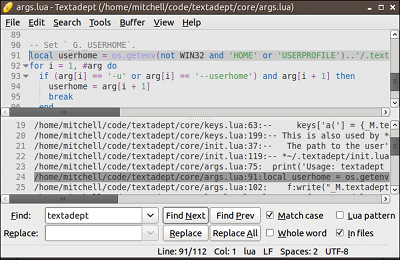
Incremental Find
Textadept searches for text incrementally as you type when you summon the find & replace pane
via Ctrl+Alt+F on Windows, Linux, and BSD, ^⌘F on macOS, and M-^F in the terminal
version. All of the find options apply except for “In Files”.
Command Entry
The versatile command entry has many different roles. Its primary role is to execute Lua commands
and interact with Textadept’s internal Lua state. In another context it filters text through
shell commands. Lua extensions allow it to do even more. Like the find & replace pane,
the command entry pops in and out as you wish. Each role has its own history that can be cycled
through via the Up and Down key bindings on Windows, Linux, BSD, and the terminal version,
and ⇡ and ⇣ on macOS.
Lua Command Entry
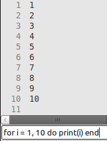
You can open the Lua command entry via Ctrl+E on Windows, Linux, and BSD, ⌘E on macOS, and
M-C in the terminal version. It acts very similarly to Lua’s interactive prompt. Type in the Lua
command or code to run and press Enter to invoke or run it. Textadept’s Lua API contains
all of the application’s built-in commands. For convenience, the contents of the buffer,
view, ui, and textadept tables are considered to be global variables, the
first parameter to buffer and view functions may be omitted, and function call parentheses
can also be omitted. For example, instead of entering buffer:append_text('foo'), you can
enter append_text('foo'). Instead of view:split(), you can simply use split. These
convenience facilities are not available in normally executed Lua code, such as code in
~/.textadept/init.lua.
Warning: if you try to cause instability of Textadept’s Lua state, you will probably succeed, so be careful.
The following key bindings apply in the Lua command entry:
- Show a documentation popup for the command under or behind the caret via
Ctrl+Hon Windows, Linux, and BSD,^Hon macOS, andM-HorM-S-Hin the terminal version. - Show completion candidates for Lua variables, tables, functions, and fields via
Tabon Windows, Linux, BSD, and the terminal version, and⇥on macOS. Use the arrow keys to make a selection and pressEnterto insert it.
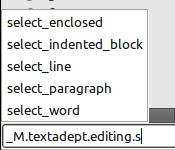
You can specify on the command line Lua commands and code to run on startup using the -e and
--execute command line argument. This is useful when you want to run dynamic commands that
do not belong in ~/.textadept/init.lua.
Tip: a side-effect of single-instance functionality in the GUI version of Textadept is that you can remotely control the original instance of Textadept. For example:
ta ~/.textadept/init.lua &
ta -e "events.emit(events.FIND, 'require')"
This will search for the first instance of the word “require” in the current file.
Shell Command Entry and Filtering Text
You can filter text through shell commands via Ctrl+| on Windows, Linux, and BSD, ⌘|
on macOS, and ^\ in the terminal version. An example would be running the shell command
sort, which accepts lines in a buffer as standard input (stdin), sorts those lines, and then
emits them to standard output (stdout), which Textadept replaces the original input text with.
textadept.editing.filter_through() describes how this feature determines stdin.
Note: be careful when using commands that emit stdout while reading stdin (as opposed to emitting stdout only after stdin is closed). Input that generates more output than stdout can buffer may hang Textadept. On Linux for example, stdout may only be able to hold 64K while there is still incoming input.
Statusbar
The statusbar consists of two sections. The left section displays temporary status messages, while the right section shows buffer status information. Buffer status information includes:
- The current line and column number.
- The lexer language name.
- The line ending mode, or EOL mode, which is either CRLF (“\r\n”) or LF (‘\n’). Line endings are the characters that separate lines.
- The indentation settings, which are a combination of an indentation character (either a tab or a space) and an indentation size (a measure of how many space characters are in one level of indentation). If tabs are used for indentation, then the indentation size is the number of space characters to draw for each tab character.
- The buffer’s encoding. File and buffer encoding specifies how to interpret text bytes for display.
Working with Files and Projects
Textadept allows you to open files using a variety of methods:
- Open, using a standard file chooser dialog, one or more files in a single directory via
Ctrl+Oon Windows, Linux, and BSD,⌘Oon macOS, and^Oin the terminal version. - Open, using a quick open dialog, one or more files in the current project or Textadept’s
current working directory via
Ctrl+Alt+Shift+Pon Windows, Linux, and BSD,^⌘⇧Pon macOS, andM-^Pin the terminal version. Typing part of any filename filters the list, with spaces being wildcards. The arrow keys move the selection up and down. Holding downShiftwhile pressing the arrow keys selects multiple files, as does holding downCtrlwhile clicking. PressingEnteror selectingOKopens all selected files. Double-clicking on a single file opens it. (The terminal requires pressingEnter.) - Open, using a quick open dialog, one or more files in the directory of the currently opened
file via
Ctrl+Alt+Shift+Oon Windows, Linux, and BSD,^⌘⇧Oon macOS, andM-S-Oin the terminal version. - Open a file by dragging it from a file manager and dropping it into one of Textadept’s views.
- Open a recently opened file from a list of recent files via
Ctrl+Alt+Oon Windows, Linux, and BSD,^⌘Oon macOS, andM-^Oin the terminal version. - Open, using a quick open dialog, one or more files in ~/.textadept/ via
Ctrl+Uon Windows, Linux, and BSD,⌘Uon macOS, and^Uin the terminal version. - Reopen the currently opened file, discarding any unsaved changes, via
Ctrl+Shift+Oon Windows, Linux, and BSD,⌘⇧Oon macOS, andM-Oin the terminal version. Textadept will prompt you to reload a file if the editor detects it has been modified externally.
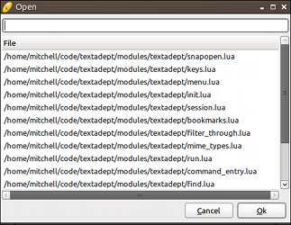
When it comes to projects, Textadept’s only concept of a project is a parent directory under a recognized form of version control (Git, Mercurial, SVN, Bazaar, and Fossil). There is no “Open Project” action. Textadept can work with multiple projects at once, since the current project depends largely on context. The current project is determined as follows:
- If the current buffer is a file, its parent directory is searched for a version control directory. If none is found, that directory’s parent directory is searched next, and so on. If a version control directory is found, its parent directory is the current project.
- If Textadept’s current working directory (cwd) contains a version control directory, that cwd is the current project. Otherwise, the cwd’s parent directory is searched, just like in step 1.
- If no version control directory is found, there is no current project.
Tip: you can specify Textadept’s current working directory by passing it on the command line when running the application. This effectively starts Textadept with a “default project”.
By default, Textadept’s quick open dialog displays nearly all types of files, and only the first
1000 files it finds. You can assign a project or directory-specific filter that indicates which
files to display for that project or directory by modifying io.quick_open_filters, and
you can specify a different maximum file list size that applies to all projects and directories
by setting io.quick_open_max. For example, in your ~/.textadept/init.lua:
io.quick_open_filters['/path/to/project'] = {'/include', '/src'}
io.quick_open_max = 10000 -- support huge projects
A filter consists of a comma-separated list of Lua patterns that match filenames and directories to include or exclude. Patterns are inclusive by default. Exclusive patterns begin with a ‘!’. If no inclusive patterns are given, any filename is initially considered. As a convenience, file extensions can be specified literally instead of as a Lua pattern (e.g. ‘.lua’ vs. ‘%.lua$’), and ‘/’ also matches the Windows directory separator (‘[/\]’ is not needed). The default filter excludes many common binary files and version control directories from searches.
You can mimic a more traditional approach to projects by saving and loading project-specific
sessions via the “File > Save Session…” and “File > Load Session…” menu items, respectively. A
session can be loaded on startup using the -s or --session command line argument.
Language
When Textadept opens a file, it automatically attempts to identify the programming language associated with that file and assigns a lexer to perform syntax highlighting of the file’s contents. The identification process is as follows:
- The first line of the file is checked against any Lua patterns in
textadept.file_types.patterns. If there is a match, the lexer associated with that matching pattern is used. - The file’s extension is checked against any of the extensions in
textadept.file_types.extensions. If there is a match, the lexer associated with that matching extension is used. If the file does not have an extension, the entire file name is used in the check.
You can associate first line patterns, file extensions, and file names with lexers by modifying
textadept.file_types.patterns and textadept.file_types.extensions. For example,
in your ~/.textadept/init.lua:
textadept.file_types.patterns['^#!.+/zsh'] = 'bash'
textadept.file_types.extensions.luadoc = 'lua'
Textadept has lexers for more than 100 different programming languages and recognizes hundreds of file types. In the event that your programming language is not understood, you can write a lexer for it, place that lexer in your ~/.textadept/lexers/ directory, and add an extension and/or pattern for it.
For a given lexer name, Textadept attempts to find, in order, that lexer from the following locations:
- Your ~/.textadept/lexers/ directory.
- Textadept’s lexers/ directory.
Tip: placing lexers in your user data directory avoids the possibility of you overwriting them when you update Textadept. These lexers also take precedence over the ones installed with Textadept.
You can manually change a buffer’s lexer via Ctrl+Shift+L on Windows, Linux, and BSD, ⌘⇧L
on macOS, and M-S-L in the terminal version. Typing part of a lexer name in the dialog filters
the list, with spaces being wildcards. The arrow keys move the selection up and down. Pressing
Enter, selecting OK, or double-clicking on a lexer assigns it to the current buffer. (The
terminal requires pressing Enter.)
Encoding
Textadept has the ability to work with files encoded in one of many different encodings, but by
default it only attempts to read UTF-8, ASCII, CP1252, and UTF-16 files, in that order. If you work
with files that have other encodings, you will need to add them to io.encodings, Textadept’s
known encoding list, before attempting to open one. For example, in your ~/.textadept/init.lua:
io.encodings[#io.encodings + 1] = 'UTF-32'
table.insert(io.encodings, 3, 'Macintosh') -- before CP1252
You can convert a buffer’s encoding using the “Buffer > Encoding” menu or
buffer.set_encoding(). You can extend the menu to include more encodings. For example,
in your ~/.textadept/init.lua:
local menu = textadept.menu.menubar[_L['Buffer']][_L['Encoding']]
local encoding = 'UTF-32'
menu[#menu + 1] = {encoding, function() buffer:set_encoding(encoding) end}
The default encoding for new buffers is UTF-8, due to its wide support in other text editors and all modern operating systems.
Buffer Settings
Textadept attempts to auto-detect a file’s line end mode (EOL mode), falling back on CRLF (“\r\n”) by default on Windows, and LF (‘\n’) on all other platforms. You can manually change the line ending mode using the “Buffer > EOL Mode” menu.
Textadept does not attempt to auto-detect a file’s indentation. The default indentation setting is two spaces, but you can specify your preferred indentation settings globally, and on a language-specific basis. For example, in your ~/.textadept/init.lua:
-- Default indentation settings for all buffers.
buffer.use_tabs = true
buffer.tab_width = 8
-- Indentation settings for individual languages.
events.connect(events.LEXER_LOADED, function(name)
if name == 'python' then
buffer.use_tabs = false
buffer.tab_width = 4
elseif name == 'ruby' or name == 'yaml' then
buffer.use_tabs = false
buffer.tab_width = 2
end
end)
You can manually change a buffer’s indentation using the following process:
- Toggle between using tabs and spaces via
Ctrl+Alt+Shift+Ton Windows, Linux, and BSD,^⇧Ton macOS, andM-TorM-S-Tin the terminal version. - Set the indentation size via the “Buffer > Indentation” menu.
- Optionally convert existing indentation to the new indentation settings via
Ctrl+Alt+Ion Windows, Linux, and BSD,^Ion macOS, andM-Iin the terminal version.
View Settings
Textadept normally does not wrap long lines into view, nor does it show whitespace characters. You
can toggle line wrapping for the current buffer via Ctrl+Alt+\ on Windows, Linux, and BSD, and
^\ on macOS. You can toggle whitespace visibility for the current buffer via Ctrl+Alt+Shift+S
on Windows, Linux, and BSD, and ^⇧S on macOS. Visible spaces are represented by dots,
and visible tabs are represented by arrows. (The terminal version does not have default key
bindings for either of these actions.)
The GUI version of Textadept can show small guiding lines based on indentation level, and
does so by default. You can toggle the visibility of these guides for the current view via
Ctrl+Alt+Shift+I on Windows, Linux, and BSD, and ^⇧I on macOS.
The GUI version of Textadept also allows you to temporarily increase or decrease the font size in the current view. The following key bindings apply for this feature:
- Increase the view’s font size via
Ctrl+=on Windows, Linux, and BSD, and⌘=on macOS. - Decrease the view’s font size via
Ctrl+-on Windows, Linux, and BSD, and⌘-on macOS. - Reset the view’s font size to its normal value via
Ctrl+0on Windows, Linux, and BSD, and⌘0on macOS.
Adept Editing
Textadept implements most of the customary key bindings for navigating text fields on each platform, including Bash-style bindings on macOS and in the terminal version. The editor also implements most of the usual basic editing key bindings (e.g. undo, redo, cut, copy, paste, etc.). All of Textadept’s navigation-related key bindings are listed in the “Movement” section of the key bindings list. Textadept’s basic editing key bindings are listed in the “Edit” section of that list. (They are also shown in the “Edit” menu.)
Brace Matching, Auto-pair, and Typeover
Textadept automatically highlights matching brace characters when the caret is over one of them:
‘(’, ‘)’, ‘[’, ‘]’, ‘{’, or ‘}’. You can jump to the current character’s complement via Ctrl+M
on Windows, Linux, and BSD, ^M on macOS, and M-M in the terminal version. You can add
highlighting for ‘<’ and ‘>’ by modifying textadept.editing.brace_matches. For example,
in your ~/.textadept/init.lua:
textadept.editing.brace_matches[string.byte('<')] = true
textadept.editing.brace_matches[string.byte('>')] = true
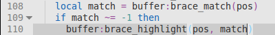
Since braces often go together in pairs, Textadept automatically inserts the complement of
opening brace characters you type, deletes that complement if you press Backspace, and
moves over the complement if you type it (as opposed to inserting it again). Textadept also
exhibits this behavior for single and double quote characters (‘'’ and ‘"’). You
can configure or disable this behavior by modifying textadept.editing.auto_pairs and
textadept.editing.typeover_chars. For example, in your ~/.textadept/init.lua:
-- Auto-pair and typeover '<' and '>'.
textadept.editing.auto_pairs[string.byte('<')] = '>'
textadept.editing.typeover_chars[string.byte('>')] = true
-- Disable auto-pair and typeover.
textadept.editing.auto_pairs = nil
textadept.editing.typeover_chars = nil
Word Highlight
Textadept can be configured to automatically highlight all occurrences of the word under
the caret, or all occurrences of the selected word (e.g. a variable name), by setting
textadept.editing.highlight_words. For example, in your ~/.textadept/init.lua:
-- Highlight all occurrences of the current word.
textadept.editing.highlight_words = textadept.editing.HIGHLIGHT_CURRENT
-- Highlight all occurrences of the selected word.
textadept.editing.highlight_words = textadept.editing.HIGHLIGHT_SELECTED
Pressing Esc clears highlighting. By default, Textadept does not perform any automatic
highlighting.
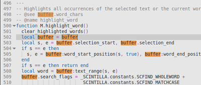
Autocompletion and Documentation
Textadept provides buffer-based word completion. It can also autocomplete symbols for programming languages and display documentation for functions and other symbols.
You can show word completion candidates for partially-typed words via Ctrl+Enter on Windows,
Linux, and BSD, ^Esc on macOS, and M-Enter in the terminal version. Continuing to type
changes the suggested completion. Use the arrow keys to navigate within the list and press
Enter to insert the rest of the selected word. By default, the list of completions comes
from the current buffer. You can configure Textadept to look in all open buffers by setting
textadept.editing.autocomplete_all_words. For example, in ~/.textadept/init.lua:
textadept.editing.autocomplete_all_words = true
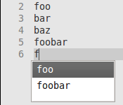
For languages that support it, you can show symbol completion candidates at the current position
via Ctrl+Space on Windows, Linux, and BSD, ⌥Esc on macOS, and ^Space in the terminal
version.
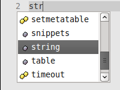 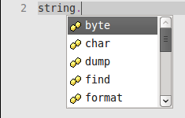
Also for languages that support it, you can show any known documentation for the current symbol
via Ctrl+H on Windows, Linux, and BSD, ^H on macOS, and M-H or M-S-H in the terminal
version. Textadept has built-in autocompletion and documentation support for Lua and C, including
for its own Lua API.
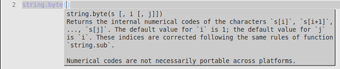
Textadept’s framework for providing symbol autocompletion and documentation relies on autocompleter functions and API files, which are often supplied by language modules. You can use this framework to write your own autocompletion routines.
Text Selections
Textadept has three kinds of text selections: contiguous, multiple, and rectangular.
You can create contiguous selections as follows:
- Make an arbitrary selection anchored at the caret by pressing the arrow keys, home/end, page
up/down, etc. while holding down the
Shiftkey, or by simply clicking and dragging the mouse. - The terminal version can also make an arbitrary selection by entering selection mode via
^^and using normal movement keys. This feature is available since some terminals do not recognizeShiftwith movement keys. While in selection mode, swap the start and end positions via^]in order to alter the selection from its opposite side. Exit selection mode by typing text, deleting text, performing an action that changes text, or by pressing^^again. - Select the current word via
Ctrl+Shift+Don Windows, Linux, and BSD,⌘⇧Don macOS, andM-S-Win the terminal version. Repeated use of this action selects subsequent occurrences of that word as additional (multiple) selections. - Select the current line via
Ctrl+Shift+Non Windows, Linux, and BSD,⌘⇧Non macOS, andM-S-Nin the terminal version. - Double click to select a word, and triple-click to select a line.
- Click and optionally drag within the line number margin to select whole lines.
- Select the current paragraph via
Ctrl+Shift+Pon Windows, Linux, and BSD,⌘⇧Pon macOS, andM-S-Pin the terminal version. Paragraphs are surrounded by one or more blank lines. - Select all buffer text via
Ctrl+Aon Windows, Linux, and BSD,⌘Aon macOS, andM-Ain the terminal version. - Select text between matching delimiters (parentheses, brackets, braces, single quotes,
double-quotes, and back quotes) via
Ctrl+Shift+Mon Windows, Linux, and BSD,^⇧Mon macOS, andM-S-Min the terminal version. Repeated use of this action toggles the selection of the delimiters themselves. - Select between HTML/XML tags via
Ctrl+<on Windows, Linux, and BSD,⌘<on macOS, andM-<in the terminal version. - Select an HTML/XML tag via
Ctrl+>on Windows, Linux, and BSD, and⌘>on macOS.
You can create multiple selections as follows:
- Add another selection by holding down
Ctrl, clicking, and optionally dragging the mouse over a range of text. - Select as an additional selection the next occurrence of the current word via
Ctrl+Shift+Don Windows, Linux, and BSD,⌘⇧Don macOS, andM-S-Win the terminal version.
Textadept mirrors any typed text at each selection.
You can create a rectangular selection as follows:
- Press the arrow keys, home/end, or page up/down, while holding down
Alt+Shifton Windows, Linux, and BSD,⌥⇧on macOS, andM-S-in the terminal version. - Click and drag the mouse while holding down the
Altkey on Windows, Linux, and BSD, and⌥on macOS. - Click and drag the mouse without holding down any modifiers (thus making a normal, multi-line
selection), press and hold down the
Altkey on Windows, Linux, and BSD,⌥on macOS, andM-in the terminal version, and then continue dragging the mouse. This feature is available because some window managers in Linux consumeAlt+Shift+ arrow keys andAlt+ mouse drag.
You are permitted to create a zero-width rectangular selection that spans multiple lines, and for this kind of selection, Textadept mirrors any typed text on all of those lines.
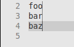 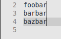
You can also copy rectangular blocks of text and paste them into rectangular blocks of the same size.
Note: macOS does not support the direct pasting rectangular selections. Instead, use the
Lua Command Entry and enter replace_rectangular(ui.clipboard_text)
after copying a block of text.
Text Transformations
Textadept can apply many different transformations to the current word, line, and selected text.
- Enclose the current word or selected text within delimiters like parentheses, braces, brackets, single quotes, double quotes, or HTML/XML tags using the key bindings listed in the “Edit > Selection” submenu.
- Convert the selected text to upper or lower case via
Ctrl+Alt+UorCtrl+Alt+Shift+U, respectively, on Windows, Linux, and BSD;^Uor^⇧U, respectively, on macOS; andM-^UorM-^Lin the terminal version. - Increase or decrease the indentation of the selected lines via
TaborShift+Tab, respectively, on Windows, Linux, and BSD;⇥or⇧⇥, respectively on macOS; andTaborS-Tabin the terminal version. You do not have to select whole lines; selecting any part of a line is sufficient. - Move the current or selected line(s) up or down via
Ctrl+Shift+UporCtrl+Shift+Down, respectively, on Windows, Linux, and BSD;^⇧⇡or^⇧⇣, respectively, on macOS; andS-^UporS-^Downin the terminal version. You do not have to select whole lines; selecting any part of a line is sufficient. - Comment out code on the current or selected line(s) via
Ctrl+/on Windows, Linux, and BSD,⌘/on macOS, andM-/in the terminal version. You do not have to select whole lines; selecting any part of a line is sufficient.
You can auto-enclose selected text between any typed punctuation character (taking into account
textadept.editing.auto_pairs) by setting textadept.editing.auto_enclose. For example,
in your ~/.textadept/init.lua:
textadept.editing.auto_enclose = true
Navigate Through History
Textadept records buffer positions within views over time and allows for navigating through
that history. Navigate backward or forward via Alt+, or Alt+., respectively, on Windows,
Linux, and BSD; ^, or ^., respectively, on macOS; and M-, or M-., respectively, in the
terminal version.
Goto Line
You can jump to a specific line in the current buffer via Ctrl+J on Windows, Linux, and BSD,
⌘J on macOS, and ^J in the terminal version. Enter the line number to jump to in the
prompt, and press Enter or click OK.
Bookmarks
Bookmarks are markers attached to lines of interest. They move in sync with the lines they were added to as buffer text is inserted and deleted. Bookmarks show up in the left-hand margin after line numbers. Textadept allows you to bookmark lines and jump back to them later. The following key bindings apply for bookmarks:
- Toggle a bookmark on the current line via
Ctrl+F2on Windows, Linux, and BSD,⌘F2on macOS, andF1in the terminal version. - Jump to the next bookmarked line via
F2. - Jump to the previously bookmarked line via
Shift+F2on Windows, Linux, and BSD,⇧F2on macOS, andF3in the terminal version. - Jump to the bookmarked line selected from a list via
Alt+F2on Windows, Linux, and BSD,⌥F2on macOS, andF4in the terminal version. - Clear all bookmarks in the current buffer via
Ctrl+Shift+F2on Windows, Linux, and BSD,⌘⇧F2on macOS, andF6in the terminal version.
Macros
Macros allow you to quickly record a series of edits and play them back without having to write a custom Lua script. The following key bindings apply for macros:
- Start recording a macro via
F9. - Stop recording a macro via
Shift+F9on Windows, Linux, and BSD,⇧F9on macOS, andF10in the terminal version. - Play back the most recently recorded macro via
Alt+F9on Windows, Linux, and BSD,⌥F9on macOS, andF12in the terminal version.
You can use the “Tools > Macros” menu to save the most recently recorded macro to a file, and to load one for playback on demand.
Snippets
Snippets are dynamic text templates that can be inserted into the buffer on demand. They are composed of any combination of plain text, placeholders for interactive input, mirrors and transforms for interactive input, and arbitrary Lua and Shell code. Snippets eliminate the need for typing repetitive code constructs like class definitions, getters and setters, control structures, API calls, and more.
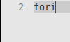 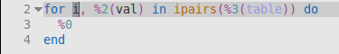
A snippet has a trigger word associated with snippet text in the snippets
table. Language-specific snippets are in a subtable assigned to their language’s lexer name, and
are often supplied by language modules. Snippets may also be the contents of files
in a snippet directory, with file names being the trigger word. The snippets documentation
describes snippets and their contents in more detail.
The following key bindings apply for snippets:
- Insert a snippet from a list of available snippets via
Ctrl+Shift+Kon Windows, Linux, and BSD,⌥⇧⇥on macOS, andM-S-Kin the terminal version. Typing part of a snippet trigger in the dialog filters the list, with spaces being wildcards. The arrow keys move the selection up and down. PressingEnter, selectingOK, or double-clicking on a snippet inserts it into the current buffer. (The terminal requires pressingEnter.) - Show completion candidates for a partially-typed snippet trigger word via
Ctrl+Kon Windows, Linux, and BSD,⌥⇥on macOS, andM-Kin the terminal version. Continuing to type changes the suggested completion. Use the arrow keys to navigate within the list and pressEnterto insert the rest of the trigger word. - Insert a snippet based on the trigger word behind the caret via
Tabon Windows, Linux, BSD, and in the terminal version, and⇥on macOS. You can insert another snippet within an active snippet. A previously active snippet will pick up where it left off after a nested snippet finishes. - Navigate to the next placeholder in the current snippet via
Tabon Windows, Linux, BSD, and in the terminal version, and⇥on macOS. - Navigate to the previous placeholder in the current snippet via
Shift+Tabon Windows, Linux, and BSD,⇧⇥on macOS, andS-Tabin the terminal version. If there is no previous placeholder, the current snippet is canceled. - Cancel the current snippet via
Esc.
Code Folding
Textadept can temporarily hide blocks of code in supported languages. Markers in the margin to
the left of code denote fold points. Clicking on those markers toggles folding. You can toggle
folding for the current block via Ctrl+* on Windows, Linux, and BSD, ⌘* on macOS, and
M-* in the terminal version.
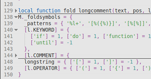
Virtual Space
Textadept normally constrains the caret to remain within text lines. Enabling virtual space
allows you to move the caret into the space beyond the ends of lines. Toggle virtual space via
Ctrl+Alt+Shift+V on Windows, Linux, and BSD, and ^⇧V in macOS. (The terminal version does
not have a default key binding for toggling virtual space.)
Key Bindings
Key bindings are simply commands (Lua functions) assigned to key sequences in the keys
table. Key sequences are composed of an ordered combination of modifier keys followed by either
the key’s inserted character or, if no such character exists, the string representation of
the key according to keys.KEYSYMS. Language-specific keys are in a subtable assigned to
their language’s lexer name, and are often supplied by language modules. Key
sequences can also be assigned tables of key bindings to create key chains (e.g. Emacs C-x
prefix). Key bindings can be grouped into modes such that while a mode is active, Textadept
ignores all key bindings outside that mode until the mode is unset (e.g. Vim-style modal
editing). The keys documentation describes all of this in more detail.
Compile, Run, Build, and Test
Textadept knows most of the commands that compile and/or run code in source files. It also knows some of the commands that build projects, and you can tell the editor how to run your project’s test suite. Textadept recognizes many of the warning and error messages emitted by those commands and marks them as they occur in compile/run/build/test output. Double-clicking on a line with a warning or error jumps to its source.
The following key bindings apply for compiling and running source files, and for building projects and running tests:
- Compile the current file via
Ctrl+Shift+Ron Windows, Linux, and BSD,⌘⇧Ron macOS, andM-^Rin the terminal version. - Run the current file via
Ctrl+Ron Windows, Linux, and BSD,⌘Ron macOS, and^Rin the terminal version. - Set, using an interactive dialog, the command line arguments for the current file’s compile
and run commands via
Ctrl+Shift+Aon Windows, Linux, and BSD, and⌘⇧Aon macOS. (The terminal version does not have a default key binding for setting command line arguments.) Enter the command line arguments for each command and pressEnteror clickOK. - Build the current project via
Ctrl+Shift+Bon Windows, Linux, and BSD,⌘⇧Bon macOS, andM-^Bin the terminal version. - Run tests for the current project via
Ctrl+Shift+Ton Windows, Linux, and BSD,⌘⇧Ton macOS, andM-^Tin the terminal version. - Stop the currently running compile, run, build, or test process via
Ctrl+Shift+Xon Windows, Linux, and BSD,⌘⇧Xon macOS, andM-^Xin the terminal version. - Jump to the source of the next recognized warning or error via
Ctrl+Alt+Eon Windows, Linux, and BSD,^⌘Eon macOS, andM-Xin the terminal version. - Jump to the source of the previously recognized warning or error via
Ctrl+Alt+Shift+Eon Windows, Linux, and BSD,^⌘⇧Eon macOS, andM-S-Xin the terminal version. - Jump to the source of the recognized warning or error on the current line via
Enter.
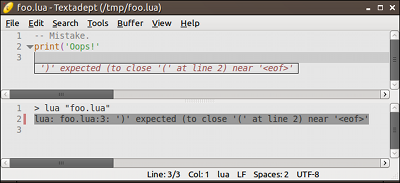
When you execute a compile, run, build, or test command, that command’s output is printed to
a temporary buffer in real-time. You can configure Textadept to print output in the background
by setting textadept.run.run_in_background. For example, in your ~/.textadept/init.lua:
textadept.run.run_in_background = true
You can change or add compile, run, build, and test commands by modifying
the textadept.run.compile_commands, textadept.run.run_commands,
textadept.run.build_commands, and textadept.run.test_commands tables,
respectively. You can add Lua patterns that recognize warning and error output by modifying the
textadept.run.error_patterns table. For example, in your ~/.textadept/init.lua:
textadept.run.compile_commands.foo = 'foo "%f"'
textadept.run.run_commands.foo = './"%e"'
textadept.run.error_patterns.foo = {'^(.-):(%d+): (.+)$'} -- bar.foo:1: oops
textadept.run.build_commands['/path/to/project'] = 'make -C src -j4'
textadept.run.test_commands['/path/to/project'] = 'lua tests.lua'
Tip: you can set compile and run commands on a per-filename basis, and these commands can contain arguments so that you do not have to invoke “Tools > Set Arguments…”
Modules
Modules are packages of Lua code that provide functionality for Textadept. Most of the editor’s features come from individual modules (see Textadept’s core/ and modules/ directories). Textadept can load modules when the application starts up, or it can load modules on-demand in response to events. Once a module is loaded, it persists in memory and is never unloaded. Textadept attempts to load, in order, a given module from the following locations:
- Your ~/.textadept/modules/ directory.
- Textadept’s modules/ directory.
Tip: placing modules in your user data directory avoids the possibility of you overwriting them when you update Textadept. These modules also take precedence over the ones installed with Textadept.
Textadept will only load modules it is explicitly told to load (e.g. from your ~/.textadept/init.lua). For example, in your ~/.textadept/init.lua:
local ctags = require('ctags')
ctags.f12 = ctags.goto_tag
events.connect(events.LEXER_LOADED, function(name)
if name == 'lua' then require('lua.extras') end
end)
The only exception to this auto-loading prohibition is modules that have the same name as a lexer language. These so-called “language modules” will be automatically loaded when an appropriate source file is opened, or when the module’s associated lexer is loaded for a buffer.
Note: lexer language names are typically the names of lexer files in your ~/.textadept/lexers/ directory and Textadept’s lexers/ directory.
Developing Modules
Modules follow the Lua package model: a module is either a single Lua file or a group of Lua files in a directory that contains an init.lua file (which is the module’s entry point). The name of the module is its file name or directory name, respectively. Here are some basic guidelines for developing modules and some things to keep in mind:
- Modules should return a table of functions and fields that are defined locally, rather than
globally. (This is standard Lua practice.) That way, the construct
local foo = require('foo')behaves as expected. - Modules should not define global variables, as all modules share the same Lua state.
- Only language modules should be named after lexer languages.
- Modules must not call any functions that create buffers and views (e.g.
ui.print(),io.open_file(), andbuffer.new()) at file-level scope. Buffers and views can only be created within functions assigned to keys, associated with menu items, or connected to events. - Additional documentation on creating language modules can be found in the the language modules documentation.
Tip: you do not need to have a language module in order to have language-specific editing
features. You can simply put language-specific features inside an events.LEXER_LOADED
event handler. For example, in your ~/.textadept/init.lua:
-- Auto-pair and brace-match '<' and '>' only in HTML and XML files.
events.connect(events.LEXER_LOADED, function(name)
local is_markup = name == 'html' or name == 'xml'
textadept.editing.auto_pairs[string.byte('<')] = is_markup and '>'
textadept.editing.brace_matches[string.byte('<')] = is_markup
textadept.editing.brace_matches[string.byte('>')] = is_markup
end)
Themes
Themes customize Textadept’s look and feel. The editor comes with three built-in themes: “light”, “dark”, and “term”. The default theme for the GUI and terminal versions is “light” and “term”, respectively.
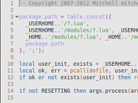 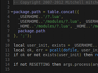 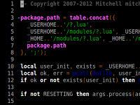
A theme consists of a single Lua file, and is typically responsible for:
- Defining the colors and text display settings (styles) used in syntax highlighting.
- Assigning colors to various UI elements such as the caret, text selections, margin markers, and documentation popups.
- Specifying what symbols to use for margin markers and how to display visual elements like the brace match indicator and snippet placeholders.
- Specifying the find & replace pane entry font name and size.
Textadept attempts to load, in order, a given theme from the following locations:
- Your ~/.textadept/themes/ directory.
- Textadept’s themes/ directory.
Tip: placing themes in your user data directory avoids the possibility of you overwriting them when you update Textadept. These themes also take precedence over the ones installed with Textadept.
You can set Textadept’s theme using view.set_theme(). You can also tweak a theme’s styles
on a per-language basis. For example, in your ~/.textadept/init.lua:
if not CURSES then
view:set_theme('light', {font = 'DejaVu Sans Mono', size = 12})
end
-- Color Java functions black instead of the default orange.
events.connect(events.LEXER_LOADED, function(name)
if name ~= 'java' then return end
local default_fore = view.style_fore[view.STYLE_DEFAULT]
view.style_fore[buffer:style_of_name('function')] = default_fore
end)
Tip: you can experiment with themes without having to restart Textadept by using the
reset() command in the Lua Command Entry. Once you make changes
to either your ~/.textadept/init.lua or theme file, issuing the reset command will reload
your changes.
The widgets in the GUI version of Textadept cannot be themed using Lua theme files. Instead, you
must use GTK Themes or GTK CSS, which are part of the GUI toolkit Textadept uses. The
exception to this is find & replace entry font, which can be changed. For Windows and macOS,
place themes in Textadept’s share/themes/ directory and edit etc/gtk-3.0/settings.ini
to set the gtk-theme-name to the directory name of your theme.
Scripting
Nearly every aspect of Textadept can be scripted, or controlled, using Lua. Textadept contains its own internal copy of Lua 5.3, which is largely unmodified compared to the official Lua release. The main difference is that Textadept’s Lua does not have any compatibility options turned on for previous versions of Lua.
Being an event-driven application, Textadept simply responds to input like key presses,
mouse clicks, and state changes by running Lua code (more specifically, executing Lua
functions). For example, when you press a key, Textadept emits an events.KEYPRESS event, which
its core/keys.lua is listening for. When a sequence like Ctrl+O on Windows, Linux, and BSD
is recognized, core/keys.lua looks up which Lua function is assigned to the keys['ctrl+o']
key. By default, it is io.open_file(), so that function is executed and the user is prompted
for a file to open. You could bind a different function to that key and Textadept will duly
execute it. Similarly, when the editor opens a file via io.open_file(), that function emits a
events.FILE_OPENED event, which modules/textadept/file_types.lua is listening for. When a
Lua file is opened, modules/textadept/file_types.lua designates the “lua” lexer to perform
syntax highlighting on that file and also loads the Lua language module if it has not already
been loaded. You could also listen for events.FILE_OPENED in your ~/.textadept/init.lua
and perform your own action, such as loading some project-specific tools for editing that file.
Your ~/.textadept/init.lua is the entry point to scripting Textadept. In this file you can set up custom key bindings, menu items, and event handlers that will perform custom actions. Here are some ideas:
- Define custom key bindings and menu items that manipulate buffer contents via the extensive
bufferAPI. - Extend Textadept’s File menu with a menu item that prompts for a commit message using an interactive dialog, and then invokes a shell command that commits the current file to version control using the provided message.
- Listen for the
events.FILE_SAVEDevent and spawn an asynchronous process that runs a syntax checker, linter, or formatter on a source file when it is saved. - Start searches with the word under the caret by substituting the “Search > Find” menu item
and key binding functions with a custom function that pre-populates
ui.find.find_entry_textbefore callingui.find.focus()to show the find & replace pane. - Auto-save files as you switch between buffers by listening for the
events.BUFFER_BEFORE_SWITCHevent and callingbuffer:save()for buffers that have abuffer.filename. In the GUI version, you can even auto-save on a timer viatimeout(). - Overload Textadept’s find & replace capabilities to use Lua patterns instead of regex by
reacting to
events.FINDandevents.REPLACEbefore Textadept can, and then determining whether or not the editor’s default routines should handle those events.
Textadept’s Lua API is extensively documented and serves as the ultimate resource when it comes to scripting the editor. The claim “Textadept gives you complete control over nearly the entire application using Lua” is not an exaggeration!
If you are looking for a more structured scripting resource, Textadept Quick Reference contains a wealth of knowledge on how to script and configure Textadept. It groups the editor’s rich API into a series of tasks in a convenient and easy-to-use manner.
Generate Autocompletion and Documentation Files
You can generate for use with Textadept autocompletion and documentation files for your Lua modules. Simply run LuaDoc with Textadept’s modules/lua/tadoc.lua doclet. For example:
cd _HOME
luadoc -d [output_path] --doclet modules/lua/tadoc [/path/to/module(s)]
where _HOME is the path where you installed Textadept and output_path is an arbitrary path
to write the generated tags and api files to. (Note that LuaDoc does not like absolute paths
to doclets, so running luadoc from _HOME is one way to get it to work.) You can then have
Textadept load and use those autocompletion and documentation files when editing Lua code. For
example, in your ~/.textadept/init.lua:
local loaded_tags = false
events.connect(events.LEXER_LOADED, function(name)
if name ~= 'lua' or loaded_tags then return end
_M.lua.tags[#_M.lua.tags + 1] = '/path/to/tags'
loaded_tags = true
end)
table.insert(textadept.editing.api_files.lua, '/path/to/api')
Compiling
Textadept is a bit unusual in that building it is only supported on Linux and BSD, or within a Docker image. The application is cross-compiled for Windows and macOS from Linux. While it is certainly possible to compile Textadept natively on those platforms, it is simply not supported in any official capacity.
Requirements
The requirements for compiling Textadept on Linux or BSD should be readily available from a package manager. The requirements for cross-compiling Textadept for Windows from Linux should also be easily obtainable.
Linux requirements:
- GNU C compiler (gcc) 7.1+ (circa mid-2017)
- GNU Make (make)
- GTK 3 development libraries for the GUI version (GTK 2.24 is also supported)
- ncurses(w) development libraries (wide character support) for the terminal version
- OR
- Docker
Note: on Ubuntu for example, these dependencies would be provided by the build-essential,
libgtk-3-dev (or libgtk2.0-dev), libncurses-dev, and docker.io packages.
BSD requirements:
- GNU C compiler (gcc) 7.1+ or Clang 4.0+
- GNU Make (gmake)
- pkg-config
- libiconv
- GTK 3 development libraries for the GUI version (GTK 2.24 is also supported)
- ncurses(w) development libraries (wide character support) for the terminal version
Windows cross-compiling requirements:
Note: on Ubuntu for example, the compiler dependency would be provided by the gcc-mingw-w64
and g++-mingw-w64 packages.
macOS cross-compiling requirements:
- OSX cross toolchain with Clang 4.0+
- OR
- Docker
Note: Textadept’s src/Dockerfile contains an example of how to build an OSX cross toolchain.
Compiling
Textadept is built from its src/ directory and binaries are placed in the application’s root directory. The general procedure is to have Textadept build its dependencies first, and then its binaries. Textadept is self-contained, meaning you do not have to install it; it can run from its current location.
The following table provides a brief summary of make rules for building Textadept on Linux
and BSD. (On BSD, substitute make with gmake.)
| Command | Description |
|---|---|
make deps |
Downloads and builds all of Textadept’s core dependencies |
make deps NIGHTLY=1 |
Optionally downloads and builds bleeding-edge dependencies |
make |
Builds Textadept, provided all dependencies are in place |
make GTK2=1 |
Builds Textadept using GTK 2.x instead of GTK 3 |
make DEBUG=1 |
Optionally builds Textadept with debug symbols |
make install |
Optionally installs Textadept (to /usr/local by default) |
make textadept |
Builds only the GUI version of Textadept |
make curses |
Builds only the terminal version of Textadept |
make curses install |
Optionally installs the terminal version of Textadept |
make uninstall |
Uninstalls Textadept (from /usr/local by default) |
make clean |
Deletes all compiled files, leaving only source files |
make clean-deps |
Deletes all unpacked dependencies, leaving only downloads |
make win-deps |
Downloads and builds Textadept’s Windows dependencies |
make win |
Cross-compiles Textadept for Windows |
make osx-deps |
Downloads and builds Textadept’s macOS dependencies |
make osx |
Cross-compiles Textadept for macOS |
If you want to install Textadept into a non-standard location, you can specify that location
using the DESTDIR variable. For example:
make install DESTDIR=/prefix/to/install/to
Linux and BSD note: if any of Textadept’s dependencies are installed under a prefix that your compiler flags do not include by default (e.g. /usr/local/), you will have to run something like:
make CFLAGS="-I/usr/local/include" CXXFLAGS="-I/usr/local/include -L/usr/local/lib"
Also, if you want to compile with Clang, you will have to run something like:
make CC=cc CXX=c++
Compiling using Docker
You can use Docker to build Textadept for Windows, macOS, or Linux. The image required to do so is about 3GB in size. For example:
localhost$ docker pull ghcr.io/orbitalquark/textadept-build:v2.0
localhost$ docker run -t -i -v /path/to/textadept:/ta -w /ta/src \
ghcr.io/orbitalquark/textadept-build:v2.0
container# make deps
container# make
container# exit
If you prefer to build your own Docker image instead of pulling one, you can run docker build .
from Textadept’s src/ directory, which contains the relevant Dockerfile.
You can issue within the container any of the build commands given in the previous table, though the install commands are meaningless.
Linux note: if, when running one of the Linux binaries produced, you get an error like
/<path>/libstdc++.so.6: version 'GLIBCXX_<version>' not found, then try compiling with the
following flags:
container# make CXXFLAGS="-0s -std=c++17 -static-libstdc++"
If you still get an error, this time like /<path>/libc.so.6: version 'GLIBC_<version>' not
found, then you will have to compile Textadept manually without Docker.
Appendix
Regex and Lua Pattern Syntax
The following table outlines Regex and Lua Pattern syntax:
| Regex | Lua | Meaning |
|---|---|---|
| . | . | Matches any character |
| [[:alpha:]] | %a | Matches any letter |
| \d | %d | Matches any digit |
| [[:lower:]] | %l | Matches any lower case character |
| [[:punct:]] | %p | Matches any punctuation character |
| \s | %s | Matches any space character |
| [[:upper:]] | %u | Matches any upper case character |
| \w | %w | Matches any alphanumeric character (Regex includes ‘_’) |
| [[:xdigit:]] | %x | Matches any hexadecimal digit |
| [set] | [set] | Matches any character in set, including ranges like A-Z |
| [^set] | [^set] | Matches the complement of set |
| * | * | Matches the previous item (Regex) or class (Lua) 0+ times |
| + | + | Matches the previous item or class 1+ times |
| *? | - | Matches the previous item or class 0+ times, non-greedily |
| +? | Matches the previous item 1+ times, non-greedily | |
| ? | ? | Matches the previous item or class once or not at all |
| {m,n} | Matches the previous item between m and n times | |
| {m,} | Matches the previous item at least m times | |
| {m} | Matches the previous item exactly m times | |
| | | Matches either the previous item or the next item | |
| %bxy | Matches a balanced string bounded by x and y | |
| %f[set] | Matches a position between characters not in and in set | |
| \< | Matches the beginning of a word | |
| \> | Matches the end of a word | |
| \b | Matches a word boundary | |
| ^ | ^ | Matches the beginning of a line unless inside a set |
| $ | $ | Matches the end of a line unless inside a set |
| ( | ( | The beginning of a captured matching region |
| ) | ) | The end of a captured matching region |
| (?:…) | Consider matched “…” as a single, uncaptured item | |
| \n | %n | The nth captured matching region’s texta |
| \x | %x | Non-alphanumeric character x, ignoring special meaning |
aIn replacement text, “\0” (Regex) or “%0” (Lua) represents all matched text.
Textadept’s regular expressions are based on the C++11 standard for ECMAScript. There are a number of references for this syntax on the internet, including:
- ECMAScript syntax C++ reference
- Modified ECMAScript regular expression grammar
- Regular Expressions (C++)
More information on Lua patterns can be found in the Lua 5.3 Reference Manual.
Terminal Version Compatibility
Textadept’s terminal version requires a font with good glyph support (like DejaVu Sans Mono or Liberation Mono), and lacks some GUI features due to the terminal’s constraints:
- No alpha values or transparency.
- No images in autocompletion lists. Instead, autocompletion lists show the first character in
the string passed to
buffer.register_image(). - No buffered or two-phase drawing.
- Carets cannot have a period, line style, or width.
- No drag and drop.
- Edge lines may be obscured by text.
- No extra line ascent or descent.
- No fold lines above and below lines.
- No hotspot underlines on mouse hover.
- No indicators other than
INDIC_ROUNDBOXandINDIC_STRAIGHTBOX, although neither has translucent drawing andINDIC_ROUNDBOXdoes not have rounded corners. - Some complex marker symbols are not drawn properly or at all.
- No mouse cursor types.
- Only up to 16 colors recognized, regardless of how many colors the terminal supports. Unrecognized colors default to white.
- Not all key sequences are recognized properly.
- No style settings like font name, font size, or italics.
- No X selection, primary or secondary, integration with the clipboard.
- No zoom.
- When using the mouse in the Windows console, Shift+Double-click extends selections and quadruple-clicking inside a selection collapses it.
Directory Structure
Textadept’s directory structure is organized as follows:
- core/: Contains Textadept’s core Lua modules. These modules are essential for the application to run. They provide Textadept’s Lua to C interface, event framework, file interactions, and localization.
- lexers/: Houses the lexer modules that analyze source code for syntax highlighting.
- modules/: Contains modules for editing text and source code, as well as language modules.
- themes/: Contains built-in themes that customize the look and feel of Textadept.
- etc/, lib/, and share/: GTK support directories and only appear in the Windows and macOS packages.
Technologies
Textadept is composed of the following technologies:
- GTK: cross-platform GUI toolkit
- ncurses: terminal UI library for Linux, macOS, and BSD
- pdcurses: terminal UI library for Windows
- gtDialog: interactive GUI and terminal UI dialog library
- cdk: terminal UI widget toolkit
- libtermkey: terminal keyboard entry handling library
- Scintilla: core text editing component
- Lexilla: core syntax highlighting library for Scintilla
- Scinterm: curses (terminal) platform for Scintilla
- Scintillua: syntax highlighting for Scintilla using Lua lexers
- Lua: core scripting language
- LPeg: Lua pattern matching library for syntax highlighting
- LuaFileSystem: Lua library for accessing the host filesystem
Migrating from Textadept 10 to 11
API Changes
| Old API | Change | New API |
|---|---|---|
| buffer | ||
| set_theme() | Renamed | view:set_theme() |
| style_name[n] | Replaced | name_of_style(n) |
| CASEINSENSITIVEBEHAVIOUR_* | Renamed | CASEINSENSITIVEBEHAVIOR_* |
| INDIC_GRADIENTCENTRE | Renamed | INDIC_GRADIENTCENTER |
| MARGIN_COLOUR | Renamed | MARGIN_COLOR |
| auto_c_case_insensitive_behaviour | Renamed | auto_c_case_insensitive_behavior |
| colourise | Renamed | colorize |
| edge_colour | Renamed | edge_color |
| set_fold_margin_*colour | Renamed | set_fold_margin_*color |
| vertical_centre_caret | Renamed | vertical_center_caret |
| events | ||
| AUTO_C_CANCELLED | Renamed | AUTO_C_CANCELED |
| N/A | Added | COMMAND_TEXT_CHANGED |
| N/A | Added | FILE_BEFORE_RELOAD |
| N/A | Added | FILE_AFTER_RELOAD |
| N/A | Added | FIND_RESULT_FOUND |
| N/A | Added | FIND_TEXT_CHANGED |
| N/A | Added | SESSION_SAVE |
| N/A | Added | SESSION_LOAD |
| N/A | Added | UNFOCUS |
| io | ||
| reload_file() | Renamed | buffer:reload() |
| save_file() | Renamed | buffer:save() |
| save_file_as() | Renamed | buffer:save_as() |
| close_buffer() | Renamed | buffer:close() |
| keys | ||
| MODE | Renamed | mode |
| lexer | ||
| N/A | Added | to_eol() |
| delimited_range() | Replaced | range() |
| nested_pair() | Replaced | range() |
| fold_line_comments() | Replaced | fold_consecutive_lines()a |
| N/A | Added | number |
| N/A | Added | colors |
| N/A | Added | styles |
| N/A | Added | folding and other fold* properties |
| lfs | ||
| dir_foreach() | Replaced | for filename in lfs.walk() do … end |
| textadept.bookmarks | ||
| toggle(line, on) | Changed | toggle() |
| textadept.editing | ||
| block_comment() | Renamed | toggle_comment() |
| highlight_word() | Replaced | highlight_words |
| textadept.file_types | ||
| lexers | Removed | N/Ab |
| textadept.find | ||
| find_incremental() | Replaced | incrementalc |
| find_incremental_keys | Removed | |
| N/A | Added | highlight_all_matches |
| textadept.history | Added | textadept.history |
| textadept.run | ||
| N/A | Added | set_arguments |
| textadept.snippets | ||
| _insert() | Renamed | insert() |
| _previous() | Renamed | previous() |
| _cancel_current() | Renamed | cancel_current() |
| _select() | Renamed | select() |
| _paths | Renamed | paths |
| ui | ||
| bufstatusbar_text | Renamed | buffer_statusbar_text |
| ui.command_entry | ||
| N/A | Added | active |
| N/A | Added | append_history |
| ui.dialogs | ||
| N/A | Added | progressbar() |
| ui.find | ||
| find_in_files_timeout | Removed | N/A |
| N/A | Added | active |
| view | ||
| N/A | Added | buffer functions and fieldsd |
aReturns prefix and function, instead of just function.
bUse for name in buffer:private_lexer_call(_SCINTILLA.properties.lexer_language[1]):gmatch('[^\n]+') do ... end.
cUse textadept.menu.menubar[_L['Search']][_L['Find Incremental']][2].
dMost buffer functions and fields are available in views now. See section below.
Buffer Indexing Changes
All buffer positions, lines, and countable entities now start from 1 instead of 0. For example,
buffer:get_line(1) now returns the contents of the first line instead of buffer:get_line(0),
and marker and indicator numbers now count from 1 instead of 0.
While this change may seem daunting for migrating user scripts, in practice it is not, since most usage is internal, and an offset of 1 or 0 does not matter. In migrating Textadept’s internals, the following changes were made:
- Themes that loop through marker numbers will need to be updated from something like
for i = 25, 31 do ... endto eitherfor i = 26, 32 do ... endorfor i = buffer.MARKNUM_FOLDEREND, buffer.MARKNUM_FOLDEROPEN do ... end. - Most references of
buffer.lengthwill need to be changed tobuffer.length + 1. For example, something likebuffer:goto_pos(buffer.length)needs to bebuffer:goto_pos(buffer.length + 1). The exceptions are whenbuffer.lengthis not used as a position, as inbuffer:indicator_clear_range(1, buffer.length), which is still valid. - Any
bufferfunction calls and property indexing with bare numbers should be changed to calls or indexes with those numbers plus 1. For example,buffer:contracted_fold_next(0)changes tobuffer:contracted_fold_next(1), andbuffer.margin_n_width[1] = ...changes tobuffer.margin_n_width[2] = .... - Any looping through lines, margins, and selections via
for i = 0, buffer.{line_count,margins,selections} - 1 do ... endneeds to befor i = 1, buffer.{line_count,margins,selections} do ... end. - Similarly, any language modules that loop back through lines (e.g. to determine types for
autocompletion) via
for i = current_line, 0, -1 do ... endneeds to befor i = current_line, 1, -1 do ... end. - Marker or indicator masks are produced by subtracting 1 from marker or indicator
numbers. For example,
1 << textadept.bookmarks.MARK_BOOKMARKchanges to1 << textadept.bookmarks.MARK_BOOKMARK - 1. - Logic that depends on the return value of
buffer:get_cur_line()may need to be changed. For example, any subsequent references toposafterlocal line, pos = buffer:get_cur_line()likeif line:sub(1, pos) ... endneed to be changed toif line:sub(1, pos - 1) ... end.
I found it helpful to quickly scan source files for syntax-highlighted numbers and then seeing if those numbers needed to be changed. Searching for “- 1”, “+ 1”, “buffer.length”, etc. was also helpful.
View API Additions and Buffer API Changes
Textadept’s buffer API is largely based on the Scintilla API, which does not distinguish
between buffer- and view-specific functionality. Textadept 11 now attempts to separate this
functionality, but only superficially. Buffers and views may be used interchangeably for the
most part, but the buffer and view API provides guidance (not hard requirements)
on which functions and fields are more appropriate for their respective objects. User scripts
do not need to be updated and will continue to function normally. The following “Find” regex
can be used to help convert buffer.* functionality to view.*:
(\w+)([.:])\b(additional_caret_fore|additional_carets_blink|additional_carets_visible|additional_sel_alpha|additional_sel_back|additional_sel_fore|all_lines_visible|annotation_visible|auto_c_max_height|auto_c_max_width|call_tip_fore_hlt|call_tip_pos_start|call_tip_position|call_tip_use_style|caret_fore|caret_line_back|caret_line_back_alpha|caret_line_frame|caret_line_visible|caret_line_visible_always|caret_period|caret_style|caret_width|cursor|edge_colour|edge_column|edge_mode|end_at_last_line|extra_ascent|extra_descent|first_visible_line|fold_display_text_style|fold_expanded|fold_flags|h_scroll_bar|highlight_guide|idle_styling|indentation_guides|indic_alpha|indic_fore|indic_hover_fore|indic_hover_style|indic_outline_alpha|indic_style|indic_under|line_visible|lines_on_screen|margins|margin_back_n|margin_cursor_n|margin_left|margin_mask_n|margin_options|margin_right|margin_sensitive_n|margin_type_n|margin_width_n|marker_alpha|marker_back|marker_back_selected|marker_fore|mouse_dwell_time|mouse_selection_rectangular_switch|property|property_expanded|property_int|rectangular_selection_modifier|representation|rgba_image_height|rgba_image_scale|rgba_image_width|scroll_width|scroll_width_tracking|sel_alpha|sel_eol_filled|size|style_back|style_bold|style_case|style_changeable|style_eol_filled|style_font|style_fore|style_italic|style_size|style_underline|style_visible|tab_draw_mode|v_scroll_bar|view_eol|view_ws|whitespace_size|wrap_indent_mode|wrap_mode|wrap_start_indent|wrap_visual_flags|wrap_visual_flags_location|x_offset|zoom|ANNOTATION_BOXED|ANNOTATION_HIDDEN|ANNOTATION_STANDARD|ANNOTATION_INDENTED|CARETSTYLE_BLOCK|CARETSTYLE_INVISIBLE|CARETSTYLE_LINE|CARET_EVEN|CARET_JUMPS|CARET_SLOP|CARET_STRICT|EDGE_BACKGROUND|EDGE_LINE|EDGE_MULTILINE|EDGE_NONE|FOLDACTION_CONTRACT|FOLDACTION_EXPAND|FOLDACTION_TOGGLE|FOLDDISPLAYTEXT_HIDDEN|FOLDDISPLAYTEXT_STANDARD|FOLDDISPLAYTEXT_BOXED|INDIC_BOX|INDIC_COMPOSITIONTHICK|INDIC_COMPOSITIONTHIN|INDIC_DASH|INDIC_DIAGONAL|INDIC_DOTBOX|INDIC_DOTS|INDIC_FULLBOX|INDIC_GRADIENT|INDIC_GRADIENTCENTRE|INDIC_HIDDEN|INDIC_PLAIN|INDIC_POINT|INDIC_POINTCHARACTER|INDIC_ROUNDBOX|INDIC_SQUIGGLE|INDIC_SQUIGGLELOW|INDIC_SQUIGGLEPIXMAP|INDIC_STRAIGHTBOX|INDIC_STRIKE|INDIC_TEXTFORE|INDIC_TT|MOD_ALT|MOD_CTRL|MOD_META|MOD_SHIFT|MOD_SUPER|MOUSE_DRAG|MOUSE_PRESS|MOUSE_RELEASE|WS_INVISIBLE|WS_VISIBLEAFTERINDENT|WS_VISIBLEALWAYS|WS_VISIBLEONLYININDENT|ALPHA_NOALPHA|ALPHA_OPAQUE|ALPHA_TRANSPARENT|CASE_CAMEL|CASE_LOWER|CASE_MIXED|CASE_UPPER|CURSORARROW|CURSORNORMAL|CURSORREVERSEARROW|CURSORWAIT|FOLDFLAG_LEVELNUMBERS|FOLDFLAG_LINEAFTER_CONTRACTED|FOLDFLAG_LINEAFTER_EXPANDED|FOLDFLAG_LINEBEFORE_CONTRACTED|FOLDFLAG_LINEBEFORE_EXPANDED|FOLDFLAG_LINESTATE|IV_LOOKBOTH|IV_LOOKFORWARD|IV_NONE|IV_REAL|MARGINOPTION_NONE|MARGINOPTION_SUBLINESELECT|MARGIN_BACK|MARGIN_COLOUR|MARGIN_FORE|MARGIN_NUMBER|MARGIN_RTEXT|MARGIN_SYMBOL|MARGIN_TEXT|MARK_ARROW|MARK_ARROWDOWN|MARK_ARROWS|MARK_BACKGROUND|MARK_BOOKMARK|MARK_BOXMINUS|MARK_BOXMINUSCONNECTED|MARK_BOXPLUS|MARK_BOXPLUSCONNECTED|MARK_CHARACTER|MARK_CIRCLE|MARK_CIRCLEMINUS|MARK_CIRCLEMINUSCONNECTED|MARK_CIRCLEPLUS|MARK_CIRCLEPLUSCONNECTED|MARK_DOTDOTDOT|MARK_EMPTY|MARK_FULLRECT|MARK_LCORNER|MARK_LCORNERCURVE|MARK_LEFTRECT|MARK_MINUS|MARK_PIXMAP|MARK_PLUS|MARK_RGBAIMAGE|MARK_ROUNDRECT|MARK_SHORTARROW|MARK_SMALLRECT|MARK_TCORNER|MARK_TCORNERCURVE|MARK_UNDERLINE|MARK_VERTICALBOOKMARK|MARK_VLINE|MASK_FOLDERS|TD_LONGARROW|TD_STRIKEOUT|TIME_FOREVER|WRAPINDENT_DEEPINDENT|WRAPINDENT_FIXED|WRAPINDENT_INDENT|WRAPINDENT_SAME|WRAPVISUALFLAGLOC_DEFAULT|WRAPVISUALFLAGLOC_END_BY_TEXT|WRAPVISUALFLAGLOC_START_BY_TEXT|WRAPVISUALFLAG_END|WRAPVISUALFLAG_MARGIN|WRAPVISUALFLAG_NONE|WRAPVISUALFLAG_START|WRAP_CHAR|WRAP_NONE|WRAP_WHITESPACE|WRAP_WORD|STYLE_BRACEBAD|STYLE_BRACELIGHT|STYLE_CALLTIP|STYLE_CONTROLCHAR|STYLE_DEFAULT|STYLE_FOLDDISPLAYTEXT|STYLE_INDENTGUIDE|STYLE_LINENUMBER|STYLE_MAX|UPDATE_H_SCROLL|UPDATE_V_SCROLL|VISIBLE_SLOP|VISIBLE_STRICT|brace_bad_light|brace_bad_light_indicator|brace_highlight|brace_highlight_indicator|call_tip_active|call_tip_cancel|call_tip_pos_start|call_tip_set_hlt|call_tip_show|clear_registered_images|clear_representation|contracted_fold_next|doc_line_from_visible|ensure_visible|ensure_visible_enforce_policy|fold_all|fold_children|fold_line|get_default_fold_display_text|hide_lines|line_scroll|line_scroll_down|line_scroll_up|marker_define|marker_define_pixmap|marker_define_rgba_image|marker_enable_highlight|marker_symbol_defined|multi_edge_add_line|multi_edge_clear_all|register_image|register_rgba_image|scroll_caret|scroll_to_end|scroll_to_start|scroll_range|set_default_fold_display_text|set_fold_margin_colour|set_fold_margin_hi_colour|set_sel_back|set_sel_fore|set_visible_policy|set_whitespace_back|set_whitespace_fore|set_x_caret_policy|set_y_caret_policy|show_lines|style_clear_all|style_reset_default|text_height|text_width|toggle_fold|toggle_fold_show_text|vertical_centre_caret|visible_from_doc_line|wrap_count|zoom_in|zoom_out|split|unsplit|goto_buffer)\b
“Replace” with
view\2\3
It is not recommended to blindly “Replace All”. Each change should be manually confirmed.
Theme and Lexer Changes
Themes and lexers have a new, optional API for defining and using colors and styles. Previously,
all definitions and access to colors and styles was accomplished through buffer.property
and buffer.property_int. Now it can be done via the lexer.colors and lexer.styles
variables. For example:
-- Textadept 10
local property, property_int = buffer.property, buffer.property_int
property['color.blue'] = 0xFF0000
property['style.keyword'] = 'fore:$(color.blue),bold'
buffer.edge_colour = property_int['color.grey']
-- Textadept 11
local colors, styles = lexer.colors, lexer.styles
colors.blue = 0xFF0000
styles.keyword = {fore = colors.blue, bold = true}
view.edge_color = colors.grey
Any additional settings passed view:set_theme() are available as global variables in the
theme. Textadept’s themes make use of font and size (the latter of which used to be
fontsize) for easily configuring font and size per-user.
Lexers can also utilize these new features. For example:
-- Textadept 10
lex:add_rule('custom_rule', token('custom', P('word')))
lex:add_style('custom', lexer.STYLE_KEYWORD .. 'italic')
-- Textadept 11
lex:add_rule('custom_rule', token('custom', P('word')))
lex:add_style('custom', lexer.styles.keyword .. {italic = true})
Note that these features are optional. Themes and lexers setting property strings is still supported.
Localization Changes
GUI mnemonics in localization keys have been removed. For example, _L['_New'] should be
changed to _L['New']. Mnemonics can still be used in localization values; it’s just the keys
that have changed. See Textadept’s core/locale.conf for examples.
Key Bindings Changes
Key sequence modifiers have changed from their shortened form to a longer form that is more
intuitive. 'c' is now 'ctrl', 'a' is now 'alt', 'm' is now 'cmd' on macOS and
'meta' in the terminal version, and 's' is now 'shift'. For example, keys.cn = ... is now
keys['ctrl+n'] = ... and keys['m<'] = ... is now keys['cmd+<'] = ... or keys['meta+<']
= ....
The key binding for inserting a user-specified snippet from a dialog has changed from Ctrl+K
(⌥⇥ on macOS | M-K on the terminal) to Ctrl+Shift+K (⌥⇧⇥ | M-S-K). Ctrl+K
(⌥⇥ | M-K) now autocompletes snippet names.
Session Changes
Textadept saves and loads session from Lua data files instead of structured text files. As a result, Textadept 11 cannot load session files from 10.x or before.
Miscellaneous Changes
- ~/.textadept/?.lua and ~/.textadept/?.{so,dll} has been removed from
package.pathandpackage.cpath, respectively. All modules should be placed in ~/.textadept/modules/. - The command entry no longer recognizes a Lua 5.1-style ‘
=’ prefix for printing return values. Printing return values has been the default for quite some time.